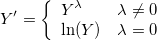

boxcox
Boxcox-func
概要
この関数は、正の値からなるベクトルを受け取り、Box-Coxべき変換法を用いて、近似的に正規分布に従うベクトルへと変換します。
Box-Cox変換は次のように定式化されます。

構文
vector boxcox(vector vd[, double lambda, int options, int period])
パラメータ
vd
- 変換される入力ベクトル(列)。VDは正のデータセットである必要があります。
lambda
- オプション。数値を指定した場合は、指定したラムダでBox-Cox変換を行います。デフォルトのラムダは数値ではありません(NANUM、つまり“0/0”)。この場合、関数は変換前に対数尤度関数を最大化する最適ラムダを推定し、ラムダは[-5,5]の範囲に制限されます。
options
- オプション。使用するBox-Cox変換方法を指定します。
- options=0（デフォルト）：SciPyのboxcox関数と同様のメソッドを使用
- options=1：統計プロセス制御の方法を使用
- options=2：時系列分析の方法を使用
period
- options = 2の場合、時系列分析法を使用するときに、元の時系列の季節期間を決定するperiodを指定します。periodは2以下の整数である必要があります。
戻り値
Box-Coxべき変換法されたベクトル（列）。
サンプル
EX1
newbook;
col(A) = data(0.1, 1.1, 0.002);
col(B) = boxcox(col(A)); //SciPyと同様の出力結果が得られ、最適なラムダ値はOriginによって推定される
col(C) = boxcox(col(A),0/0,1); //SPC法を使用。lambdaは省略不可。デフォルト値「0/0」は、最適なlambdaを推定することを意味する。
関連情報
yeojohnson jtrans